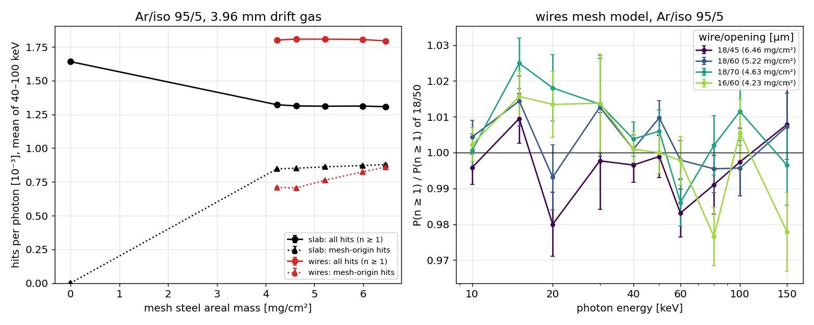
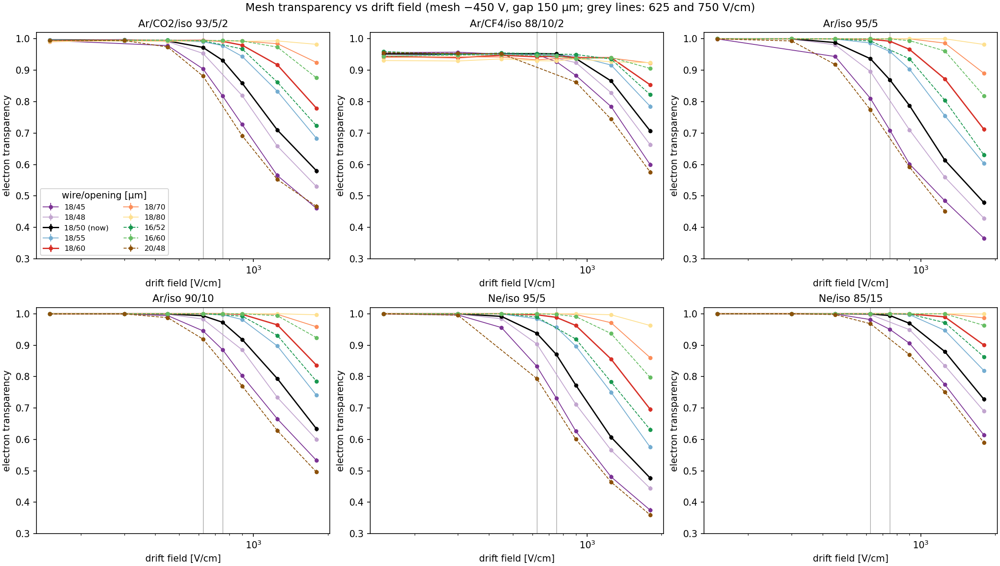
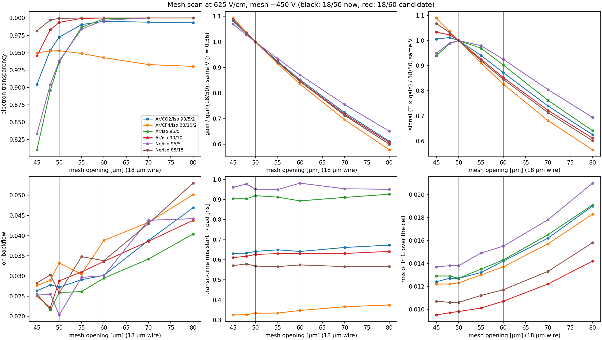

Changing the P2 mesh from 18/50 to 18/60: what the simulation says
Overnight simulation scan (28 Nov 2026): transparency, gain, ion backflow, timing, VMM efficiency and photon background for ten mesh geometries. The more open mesh does not lower the photon background; it costs about 5 V of gain and gains transparency.
Status: one night of simulation (27–28 Nov 2026), not yet reviewed. Only 18/50 is a measured P2 mesh; every other mesh here is a hypothetical candidate. Every mesh is assumed calendered as in the COMSOL model (the P2 mesh thickness has not been measured).
The answer in short
- The photon background does not go down. Photon hits per photon, 18/60 over 18/50: 1.0014 ± 0.0024 (40–100 keV, Ar/iso 95/5, 2·108 photons per mesh).
- The gain drops by about 15 % at the same mesh voltage. About +5 V restores it in the simulation; one published measurement suggests the real penalty could be larger.
- Transparency improves in every gas except Ar/CF4/iso: at the SPS VMM point (Ar/CO2/iso, 750 V/cm) from 0.93 to 0.99.
- VMM efficiency: 2–4 points lower if the voltage is left unchanged, 0.6–1.6 points higher in Ar/CO2/iso once the gain is restored.
- Timing is unchanged; ion backflow rises by about 22 %.
So in the simulation 18/60 is a small transparency improvement that needs a few volts more, not a background reduction.
Photon background (Geant4)
3.3·109 photons and 1.4·106 electrons, production physics (Heed in the gas, no PIXE), normal incidence. A "hit" is a photon that leaves at least one primary electron in the drift gas.
| mesh (wire/opening µm) | steel [mg/cm²] | hits per photon, 40–100 keV [10⁻³] | ratio to 18/50 | share of hits starting in the mesh |
|---|---|---|---|---|
| 18/45 | 6.46 | 1.794 ± 0.004 | 0.994 ± 0.003 | 0.48 |
| 18/50 (now) | 5.99 | 1.805 ± 0.003 | 1 | 0.46 |
| 18/60 | 5.22 | 1.807 ± 0.003 | 1.001 ± 0.002 | 0.42 |
| 18/70 | 4.63 | 1.808 ± 0.004 | 1.002 ± 0.003 | 0.39 |
| 16/60 | 4.23 | 1.801 ± 0.004 | 0.998 ± 0.003 | 0.39 |
| no steel at all | 0 | 1.641 ± 0.003 | 0.909 | 0 |
- Why: hits that start in the mesh steel fall by 7.4 ± 0.3 % for 18/60, but electrons from the pad copper underneath pass through the larger holes and add back the same amount. At 60 keV, per 10⁻³ photons: mesh 0.790 → 0.730, pad copper 0.540 → 0.599, gas 0.274 unchanged.
- The ratio is the same for hits with ≥ 1, ≥ 10 and ≥ 30 primaries, in the SPS gas (1.004 ± 0.005), and folded with the P2Sim photon spectrum (1.004 ± 0.003).
- Removing the steel completely would only give −9 %.
- The 100 MeV electron signal is unchanged for every mesh (primary-electron distributions: KS p = 0.09–1.00).

Side finding, to be checked before it is quoted: the mesh model used for all earlier photon numbers is a uniform slab with no holes, so it stops the pad-copper electrons. With a mesh that has real holes the 40–100 keV hit probability is 27 % higher (1.805 against 1.312·10⁻³), and the folded MM0 rate is 92.3 against 79.1 MHz. The new wire model is itself an approximation (two crossed layers of cylinders, not woven).
Transparency, gain, backflow, timing (COMSOL + Garfield++)
54 new field solves and 546 Garfield jobs: ten meshes, six gases, drift fields 150–1800 V/cm, mesh at 430/450/470 V, 150 µm amplification gap. Numbers below are at mesh −450 V.
| Ar/CO2/iso 625 V/cm | Ar/CO2/iso 750 V/cm | Ar/CF4/iso 625 V/cm | Ar/iso 95/5 625 V/cm | Ne/iso 95/5 625 V/cm | |
|---|---|---|---|---|---|
| transparency, 18/50 | 0.9725 ± 0.0012 | 0.9316 ± 0.0018 | 0.9529 ± 0.0015 | 0.9366 ± 0.0017 | 0.9382 |
| transparency, 18/60 | 0.9951 ± 0.0005 | 0.9919 ± 0.0006 | 0.9429 ± 0.0016 | 0.9988 | 0.9968 |
| gain 18/60 ÷ 18/50, same voltage | 0.852 | 0.854 | 0.835 | 0.846 | 0.871 |
| signal (transparency × gain), same voltage | 0.872 | 0.909 | 0.827 | 0.903 | 0.926 |
| extra mesh voltage for equal gain | +5.2 V | +5.3 V | +5.2 V | +4.8 V |
- Transparency: with 18/60 the wire loss is below 0.4 % at both SPS fields in Ar/CO2/iso and the plateau reaches about 900 V/cm (0.980). With 18/50 the 750 V/cm point is already on the falling edge.
- Ar/CF4/iso is the exception: its loss is CF4 attachment, which grows with the opening (4.7 % → 5.7 %), so transparency falls by one point.
- Gain: −1.5 % per µm of opening, the same in every gas (18/70: −28 %, 18/80: −39 %). Gain uniformity across the mesh cell does not change (rms of ln G 0.013 → 0.014).
- Ion backflow: 2.7 % → 3.3 % at 625 V/cm (+22 ± 5 %), 3.2 % → 3.9 % at 750 V/cm.
- Transit time through the mesh to the pads: rms 0.3–1.0 ns depending on the gas, identical for the two meshes within 0.02 ns.
- Field at the wires: +2.5 % at the same voltage, about +4 % after the +5 V.
- Thinner wire: 16/52 keeps the gain (−2 %) and still reaches 0.994 transparency in Ar/CO2/iso at 625 V/cm; 16/60 behaves like 18/60 with 29 % less steel than 18/50.


VMM efficiency and time resolution
A per-pad model (Heed primaries, Magboltz drift, the transparency and gain above, Polya avalanche, VMM shaper and threshold as run at SPS, gain spread across the chamber). Its one free number, the absolute gain, is fixed so that 18/50 reproduces the measured VMM threshold survival at the SPS point (0.89). "Efficiency" here is that threshold survival.
| gas, drift field | 18/50 | 18/60, same voltage | 18/60, gain restored | time spread σ68 after walk correction, 18/50 → 18/60 |
|---|---|---|---|---|
| Ar/CO2/iso, 625 V/cm | 0.887 | 0.853 (−3.5 ± 0.1 points) | 0.893 (+0.6) | 14.8 → 14.9 ns |
| Ar/CO2/iso, 750 V/cm | 0.876 | 0.853 (−2.3) | 0.892 (+1.6) | 15.5 → 15.5 ns |
| Ar/CF4/iso, 625 V/cm | 0.906 | 0.862 (−4.3) | 0.903 (−0.2) | 6.9 → 7.1 ns |
| Ar/iso 95/5, 625 V/cm | 0.901 | 0.875 (−2.6) | 0.914 (+1.4) | 19.6 → 19.6 ns |
| Ar/iso 95/5, 750 V/cm | 0.879 | 0.873 (−0.6) | 0.913 (+3.4) | 20.9 → 20.7 ns |
| Ar/iso 90/10, 625 V/cm | 0.932 | 0.900 (−3.2) | 0.933 (+0.1) | 14.0 → 14.1 ns |
| Ne/iso 95/5, 625 V/cm | 0.596 | 0.557 (−3.9) | 0.628 (+3.2) | 21.4 → 21.4 ns |
| Ne/iso 85/15, 625 V/cm | 0.807 | 0.736 (−7.1) | 0.807 (0.0) | 14.3 → 14.5 ns |
- The Ne rows are low because every gas is run at the SPS gain; read them as relative only.
- Without walk correction the time spread grows by 1–2.5 ns at the same voltage (smaller pulses cross the threshold later); with the gain restored it does not.
- 18/70 and 18/80 at the same voltage lose 8 and about 15 points.
How far to trust this
- Transparency: the 18/50 baseline reproduces the earlier value (0.9366 ± 0.0017 against 0.934 ± 0.002), and the 18/45-to-18/60 change matches a published measurement with exchangeable meshes (Kuger: 95.5 % → 99.3 % at 600 V/cm in Ar/CO2). But the simulated transparency edge sits 150–200 V/cm lower than our SPS data, so the gain from 18/60 at 750 V/cm may be overestimated; 625 V/cm is the safer number.
- Gain: relative only, and its size is not validated. A published comparison of 63 and 78 µm pitch bulk detectors (Bhattacharya et al.) needed about +33 V for equal gain; this simulation gives +8 V for the same change. Two detectors can differ that much from the gap alone, but the voltage penalty for 18/60 could be more than +5 V.
- Ion backflow: agrees with the published pitch dependence (+25–30 % for 63 → 78 µm, +24 % here).
- Photon background: the "no reduction" result holds in two very different mesh models; the absolute rate does not. Normal incidence only.
- Efficiency model: reproduces the SPS VMM mesh-voltage scan near the operating point to 4 %; its simulated time spread is 13–21 % narrower than the DREAM data.
- Not simulated: discharge rate, mesh sag, handling. Published α-particle tests point to somewhat more discharges for coarser meshes.
Where it is
Repository P2_Geant_Garfield, folder docs/results/mesh_scan/ (garfield/,
xray/, detector/, literature.md), each with a README naming scripts, commits
and HTCondor clusters. Raw outputs: /eos/user/a/akallits/p2_out/meshscan_20261128/.